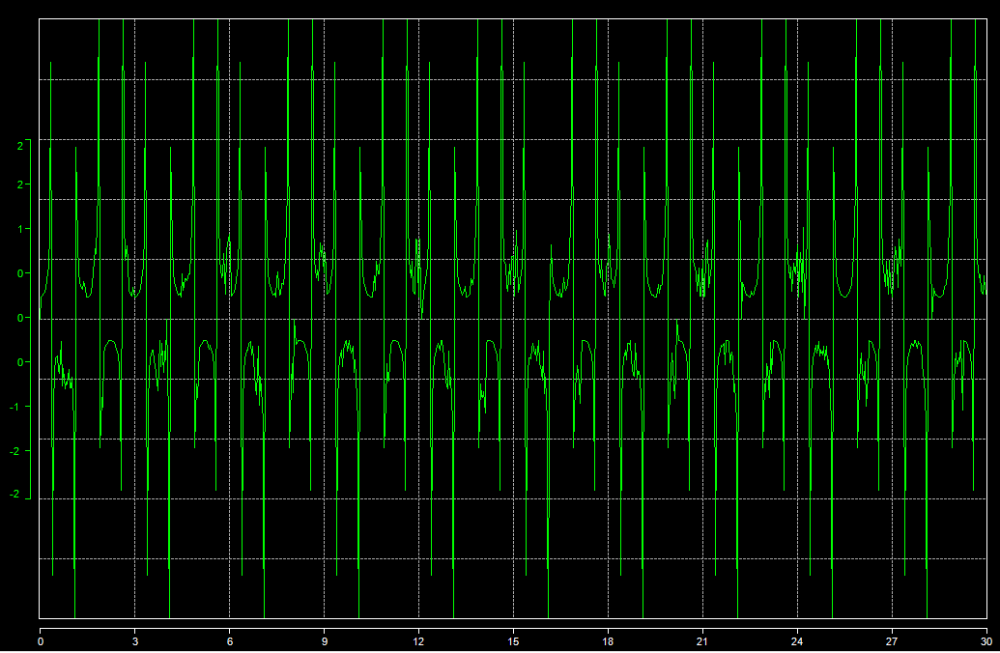

The 'Series' tab of the graphic configuration window contains generic properties of graphic series (or trace)
List graphic layout mode permits to change the current layout mode of the graphic.
All graphic series (or traces) are shown is the series grid.

First cell apart, all cells value can be modified in order to set a particular property of a graphic serie.
Some commands of tool bar are specific to the 'Series' tab.
 Channel list: Open the channel list to add graphic series.
Channel list: Open the channel list to add graphic series.
 Create serie: Create new graphic serie.
Create serie: Create new graphic serie.
Delete serie: Delete a graphic serie.
Copy: Copy a graph serie.
 Past: Past a graph serie.
Past: Past a graph serie.
Move up: Move a serie up in the grid.
 Move down: Move a serie down in the grid.
Move down: Move a serie down in the grid.
Check box 'Allow overscaling' enable over scaling for all graphic series.
Over scaling is applied on series only for the 'Manual' serie scaling mode. If the scale span set by the user is smaller than the actual serie values span, the 'Overscaling' flag will defined whether or not, out of scale sample should be drawn on the graphic.
Non over scaled graphic:

Over scaled graphic:

Created with the Personal Edition of HelpNDoc: Full-featured EPub generator